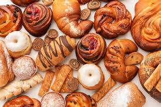

Pizza
 Pizza (Italian: [ˈpittsa], Neapolitan: [ˈpittsə]) is a savory dish of Italian origin consisting of a usually round,
flattened base of leavened wheat-based dough topped with tomatoes, cheese, and often various other ingredients (such as
anchovies, mushrooms, onions, olives, pineapple, meat, etc.), which is then baked at a high temperature, traditionally
in a wood-fired oven.[1] A small pizza is sometimes called a pizzetta. A person who makes pizza is known as a pizzaiolo.
Pizza (Italian: [ˈpittsa], Neapolitan: [ˈpittsə]) is a savory dish of Italian origin consisting of a usually round,
flattened base of leavened wheat-based dough topped with tomatoes, cheese, and often various other ingredients (such as
anchovies, mushrooms, onions, olives, pineapple, meat, etc.), which is then baked at a high temperature, traditionally
in a wood-fired oven.[1] A small pizza is sometimes called a pizzetta. A person who makes pizza is known as a pizzaiolo.
Pastries

Pastry refers to a variety of doughs, as well as the sweet and savoury baked goods made from them. These goods are often
called pastries as a synecdoche, and the dough may be accordingly called pastry dough for clarity. Sweetened pastries
are often described as bakers' confectionery
Lets Add Footer